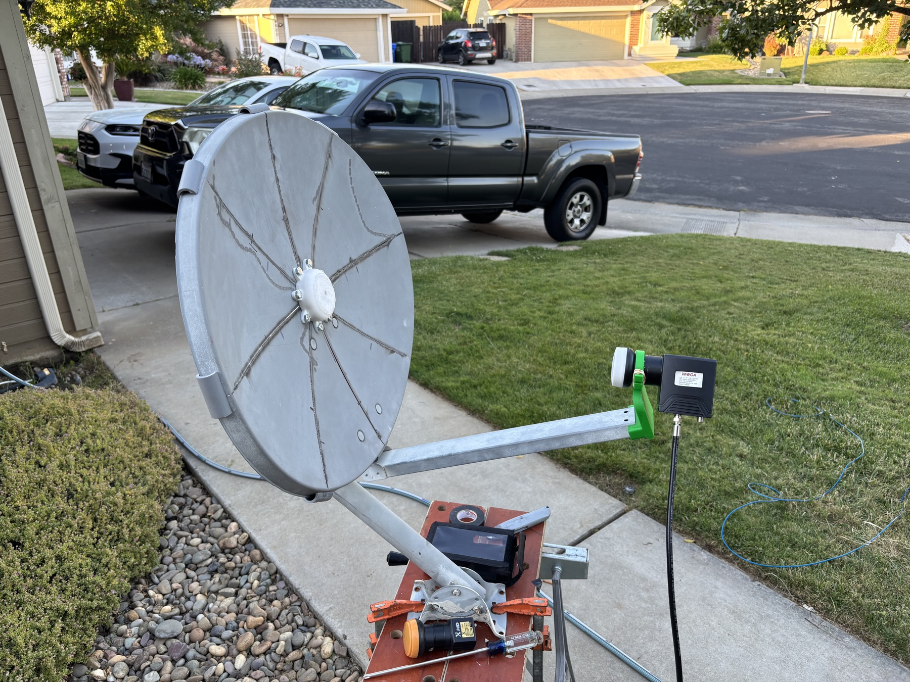

This satellite path is not a remote-control system for VillageServer. It is a receive-and-replay broadcast path: a repurposed dish, a generic LNB, a receiver or recorder, and a local screen, wall, speaker, or projector.

What the satellite part really does
First, an unused satellite dish is repurposed. The team retrofits it with a generic LNB, aims it at a satellite that covers the region, and receives Christian radio or video content that is already being broadcast Free-to-Air.
The stream can be played live through a TV, projector, speaker, wall, or screen in a home, church, school, or community center. With an HTML recorder or similar recorder, a pastor or local leader can save programs and replay them later as often as needed.
What it is not
- Not a Raspberry Pi update link — it does not currently update the VillageServer live unless a recorded stream is later copied to microSD and loaded into the library.
- Not remote team coordination — unless custom uplink work is added through a teleport organization, this is not how the field team sends messages back.
- Not the emergency-comms plan — amateur radio may become a future path, but it is separate from this satellite receive model.
- Not required for the core kit — the offline VillageServer library should still work without the dish.

How a field setup works
- Repurpose an unused dish
Start with a satellite dish that can be safely mounted, moved, and held in alignment for the field setting.
- Retrofit a generic LNB
Attach the LNB and receiver path needed to capture the Free-to-Air broadcast signal for that region.
- Aim at the regional satellite
Point the dish toward a satellite already broadcasting Christian radio or video content over the area being served.
- Play the content locally
Send the radio or video to a speaker, TV, projector, wall, or screen where the group can listen or watch together.
- Record useful programs
With an HTML recorder or similar recorder, save broadcasts so the local leader can replay them later without waiting for the live signal.
- Bridge to VillageServer only if needed
If a saved program should live in the local library, copy the recorded file to microSD and load it through the Raspberry Pi VillageServer.
Think of satellite as a regional content receiver, not the heart of the system. The VillageServer library remains local, offline-first, and useful without a live signal.
Download the corrected Satellite Systems overview as a printable PDF for kit planning and field briefings.
Download Satellite Systems PDF